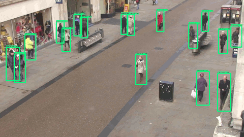
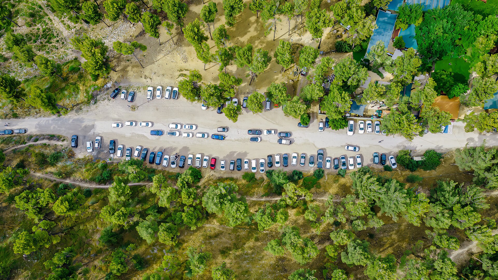
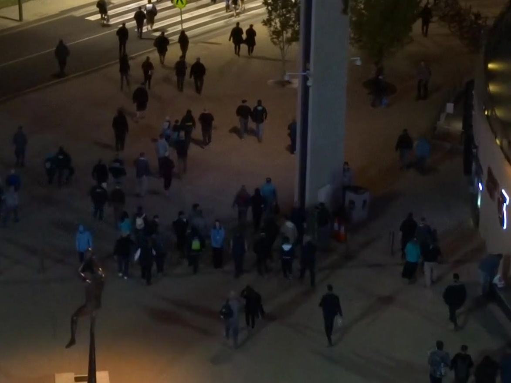
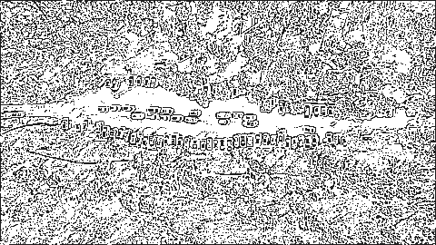

AC-MOT
Multi-Object Tracking
Computers Engineering and Artificial Intelligence Department
Cairo, Egypt



Introduction and Motivation
What detection and tracking are, where tracking is used, why it is hard, and how we measure its quality.
Object Detection: What Is in the Image?
 Detector output on one frame
Detector output on one frame“What objects are here, and where are they?”
Where Multi-Object Tracking Is Used
 Traffic monitoring
Traffic monitoring Public spaces
Public spaces
Drones & aerial videoCount vehicles, measure flow, detect stopped cars.
Measure crowd movement and how full stations and malls are.
Follow people near roads and crossings.
Our focus: drone (UAV) video — many small objects, a moving camera, and limited computer power.
IoU: How Much Do Two Boxes Overlap?

IoU in one line
0 = the boxes do not touch · 1 = identical boxes. A prediction usually counts as correct when IoU ≥ 0.5.
Compares a prediction with the ground truth to decide TP or FP.
Compares two predictions and deletes the duplicate if they overlap too much.
MOTA: Count Every Tracking Mistake
GT = number of ground-truth objects over all frames
Related Work: Detectors and Trackers
Which detector and which tracker we chose — and the experiments that led to that choice.
ByteTrack: Give Weak Boxes a Second Chance

Why ByteTrack
- Good speed
- Strong accuracy
- Simple design
- No heavy ReID needed
- Real-time friendly
- Works with adaptive detector settings

Problem Formulation and Research Gap
Why one fixed detector setting cannot fit every scene.
One Fixed Setting Cannot Fit Every Scene
Easy scene
wasted computeHard scene
missed objects

Proposed Framework: AC-MOT
Measure the scene. Score its difficulty. Adapt the detector. Keep the tracker stable.
Why Scene Analysis Stays Fast
 Is · 480 × 270
Is · 480 × 270 G
GEdge Complexity: How Busy Is the Picture?
Simple scene
edge density —

Complex scene
edge density —
Low Light: Is the Frame Dark?
Gray values go from 0 (black) to 255 (white).
Day Night
NightBlur: Are the Edges Sharp?
The Laplacian finds fast changes from dark to light. Sharp images have high variance.
 Blurred
Blurred
Stage 2: Optimization and Generalization
Replace hand-picked numbers with a defensible search, test it once, then test it on a new dataset.

Contribution, Limits and Future Work
What this work adds, what it does not claim, and where it goes next.